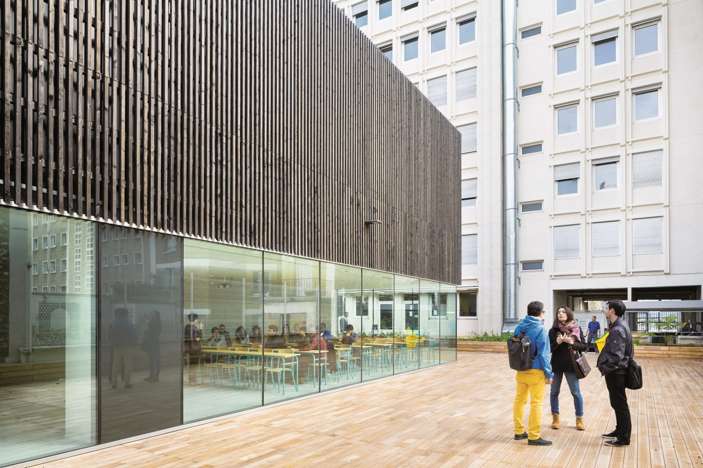
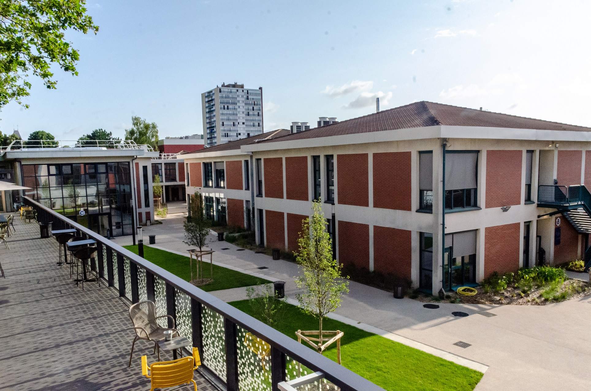
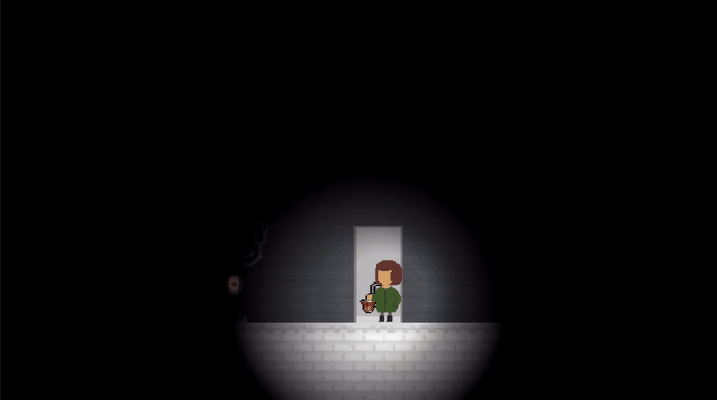

Futur étudiant en école d'ingénieur à l'Efrei, passionné par le développement web.

Après avoir obtenu un baccalauréat STI2D, spécialité Systèmes
d’Information et Numérique (SIN), j’ai poursuivi mes études avec un
BUT Informatique, que j’ai effectué sur une durée de trois ans.
J'y
ai acquis des compétences solides en développement web et en
programmation. J'ai appris à travailler sur des projets concrets et à
collaborer avec d'autres étudiants. Les projets clés réalisés durant
cette formation seront listés ci-dessous.
À l’issue de ce parcours, j’ai choisi de continuer mon cursus en
intégrant l’EFREI, une école d’ingénieurs spécialisée dans le
numérique, afin de renforcer mes compétences et me préparer à une
carrière dans les domaines de l’informatique et des nouvelles
technologies.
Je suis particulièrement intéressé par le
développement web (avec plus d'attrait envers le frontend),
l’intelligence artificielle et les jeux vidéo.

Développement Frontend d’un assistant IA pour artistes (React, Next.js, et Tailwind)
Cliquez pour visiter PhraserDéveloppement Frontend de modèles de documents et scripts d’exports de documents sur la plateforme easyQuorum
Cliquez pour voir la solution easyQuorumUne carte interactive pour trouver des magasins autour d'un point. Développée avec Leaflet et utilisant du php.
Voir
Un jeu de plateforme 2D développé sur Unity en C#. Le joueur incarne un personnage qui doit traverser des niveaux en évitant des obstacles et a pour objectif de rallumer des balises et éclairer le monde après un désastre. Le jeu est conçu pour être accessible à tous, avec des graphismes type pixel art.
VoirLe site sur lequel vous êtes actuellement. Présente mes compétences et mes projets. Codé en simple HTML/CSS et JS.
Voir le GitHub